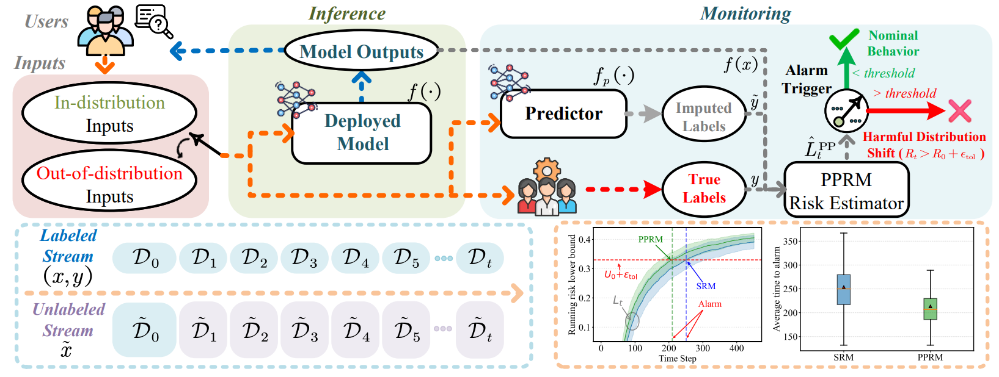
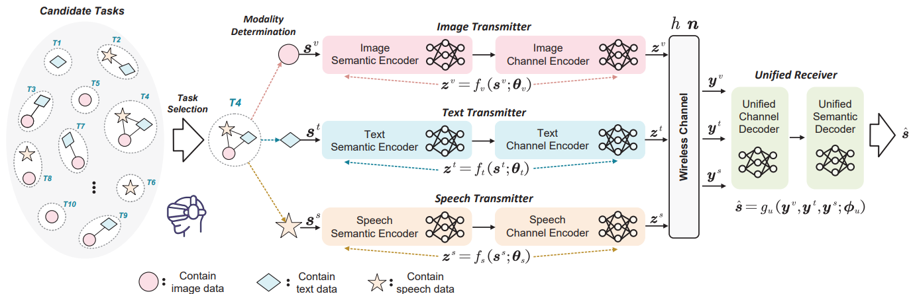
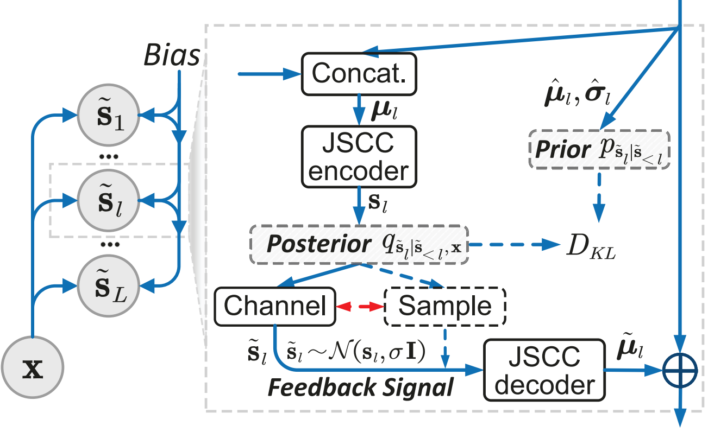
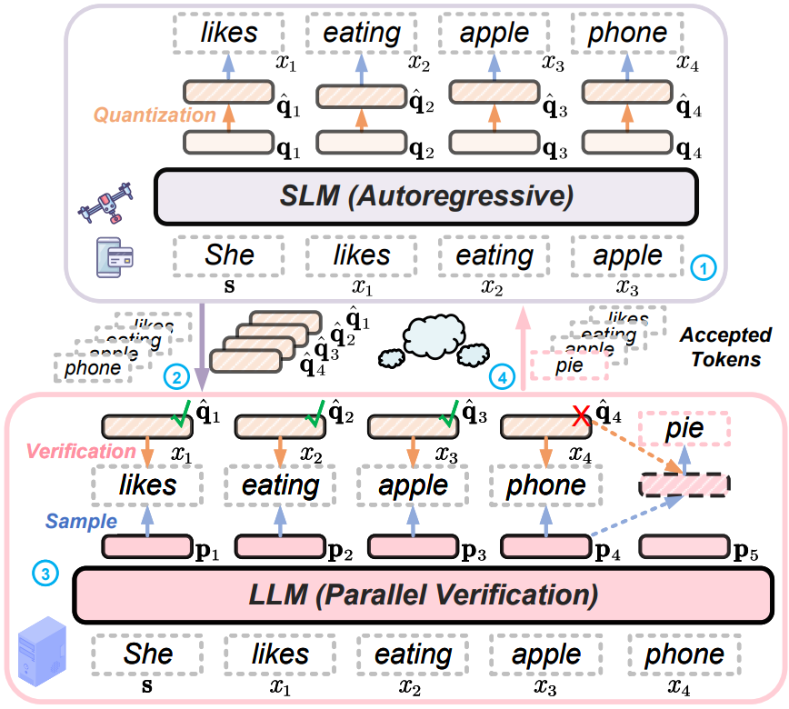
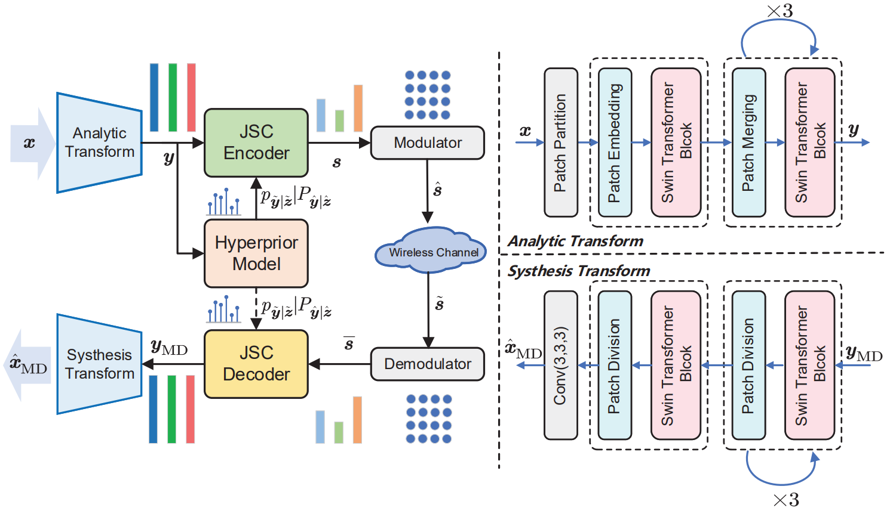
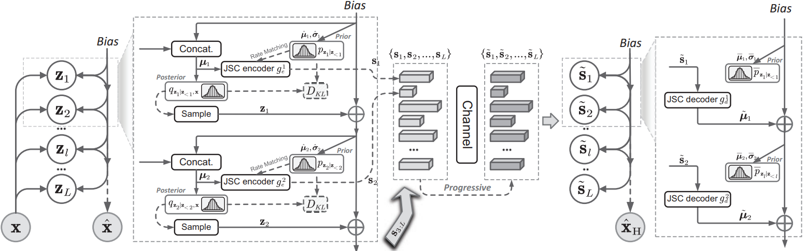

≋
Semantic Communication
Learned image transmission, multimodal task-oriented communication, secure semantic coding, and channel-adaptive systems.
- JSCC
- Multimodal coding
- Adaptive rate
Ph.D. Candidate · Zhejiang University
I am a researcher working at the intersection of semantic communication, efficient multimodal AI, and edge–cloud intelligence.
01 · About
My work asks a simple question: how can intelligent models communicate, adapt, and reason under real-world resource constraints?
I am pursuing my Ph.D. at the College of Information Science and Electronic Engineering, Zhejiang University, advised by Prof. Yunlong Cai and Prof. Guanding Yu. From 2024 to 2025, I was a visiting Ph.D. researcher at King’s College London, advised by Prof. Osvaldo Simeone.
My research spans learned source–channel coding, multimodal semantic systems, adaptive edge–cloud inference, and prediction-powered monitoring—from statistical foundations to efficient implementation.
02 · Research
Communication-efficient learning—from the physical channel to multimodal models and distributed AI systems.
Learned image transmission, multimodal task-oriented communication, secure semantic coding, and channel-adaptive systems.
Long-context VLM/LLM inference, hybrid linear attention, visual spatial reasoning, and tool-using agents.
Adaptive speculative decoding, communication-aware acceleration, and statistically reliable model monitoring.
03 · Publications

Risk monitoringPrediction-powered inferenceDistribution shift
Semi-supervised monitoring that detects harmful shifts with finite-sample false-alarm guarantees.

2026 Stephen O. Rice Prize



ICMLPrediction-Powered Risk Monitoring of Deployed Models for Detecting Harmful Distribution ShiftsGuangyi Zhang, Yunlong Cai, Guanding Yu, Osvaldo Simeone · CCF-A
COMMLQuantize-Sample-and-Verify: LLM Acceleration via Adaptive Edge-Cloud Speculative DecodingGuangyi Zhang, Yunlong Cai, Guanding Yu, Petar Popovski, Osvaldo Simeone
TWCCoarse-to-Fine: A Dual-Phase Channel-Adaptive Method for Wireless Image TransmissionHanlei Li, Guangyi Zhang, Kequan Zhou, Yunlong Cai, Guanding Yu
TWCROME: Robust Model Ensembling for Semantic Communication Against Semantic Jamming AttacksKequan Zhou, Guangyi Zhang, Yunlong Cai, Qiyu Hu, Guanding Yu
AAAILearned Image Transmission with Hierarchical Variational AutoencoderGuangyi Zhang, Hanlei Li, Yunlong Cai, Qiyu Hu, Guanding Yu, Runmin Zhang · CCF-A
TCCNProgressive Learned Image Transmission for Semantic Communication Using Hierarchical VAEGuangyi Zhang, Hanlei Li, Yunlong Cai, Qiyu Hu, Guanding Yu, Zhijin Qin · Popular Document
COMMAGToward Compatible Semantic Communication: A Perspective on Digital Coding and ModulationGuangyi Zhang, Kequan Zhou, Yunlong Cai, Qiyu Hu, Guanding Yu
TWCFeature Allocation for Semantic Communication With Space-Time Importance AwarenessKequan Zhou, Guangyi Zhang, Yunlong Cai, Qiyu Hu, Guanding Yu, A. Lee Swindlehurst
NeurIPS WSConformal Sparsification for Bandwidth-Efficient Edge-Cloud Speculative DecodingP. Bhattacharjee, F. Tian, M. Zhong, Guangyi Zhang, et al.
TCOMA Unified Multi-Task Semantic Communication System for Multimodal DataGuangyi Zhang, Qiyu Hu, Zhijin Qin, Yunlong Cai, Guanding Yu, Xiaoming Tao · Stephen O. Rice Prize · ESI Hot Paper
TCOMFrom Analog to Digital: Multi-Order Digital Joint Coding-Modulation for Semantic CommunicationGuangyi Zhang, Pujing Yang, Yunlong Cai, Qiyu Hu, Guanding Yu
TCOMO2SC: Realizing Channel-Adaptive Semantic Communication With One-Shot Online-LearningGuangyi Zhang, Kai Kang, Yunlong Cai, Qiyu Hu, Yonina C. Eldar, Guanding Yu
TCCNSCAN: Semantic Communication with Adaptive Channel FeedbackGuangyi Zhang, Qiyu Hu, Yunlong Cai, Guanding Yu
COMMLAlleviating Distortion Accumulation in Multi-Hop Semantic CommunicationGuangyi Zhang, Qiyu Hu, Yunlong Cai, Guanding Yu
TWCRobust Semantic Communications With Masked VQ-VAE Enabled CodebookQiyu Hu, Guangyi Zhang, Zhijin Qin, Yunlong Cai, Guanding Yu, Geoffrey Ye Li · ESI Highly Cited
Complete and up-to-date record on Google Scholar ↗
04 · Experience
My academic training and visiting research experience across Zhejiang University and King’s College London.
Doctoral study
Zhejiang University · Hangzhou, China
Research on semantic communication, learned image transmission, multimodal coding, and edge–cloud intelligence.
Visiting Ph.D. researcher
King’s College London · London, UK
Worked on communication-aware speculative decoding and prediction-powered monitoring for efficient and reliable deployed AI, in collaboration with Prof. Osvaldo Simeone.
Undergraduate study
Zhejiang University · Hangzhou, China
Outstanding Graduate
05 · Honors
Recognition for research impact, academic excellence, and engineering practice.
Best paper published in IEEE Transactions on Communications · Top 0.1%
National Scholarship · Top 2%
China Association for Science and Technology · Top 1%
East China Regional Third Prize
Zhejiang University · Two consecutive years
Zhejiang University
06 · Service
I review for leading journals and conferences in communications and signal processing.
IEEE JSAC · TWC · TCOM · TCCN · WCL · SPL · COMML · TVT
IEEE GLOBECOM · ICC · WCNC · VTC · PIMRC · AAAI · ACM MM
Let’s connect